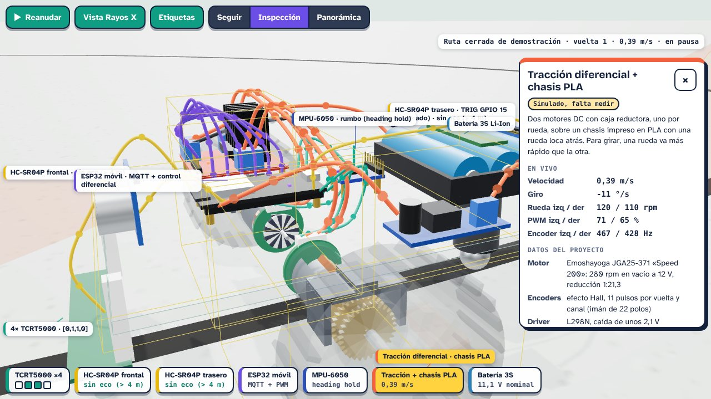
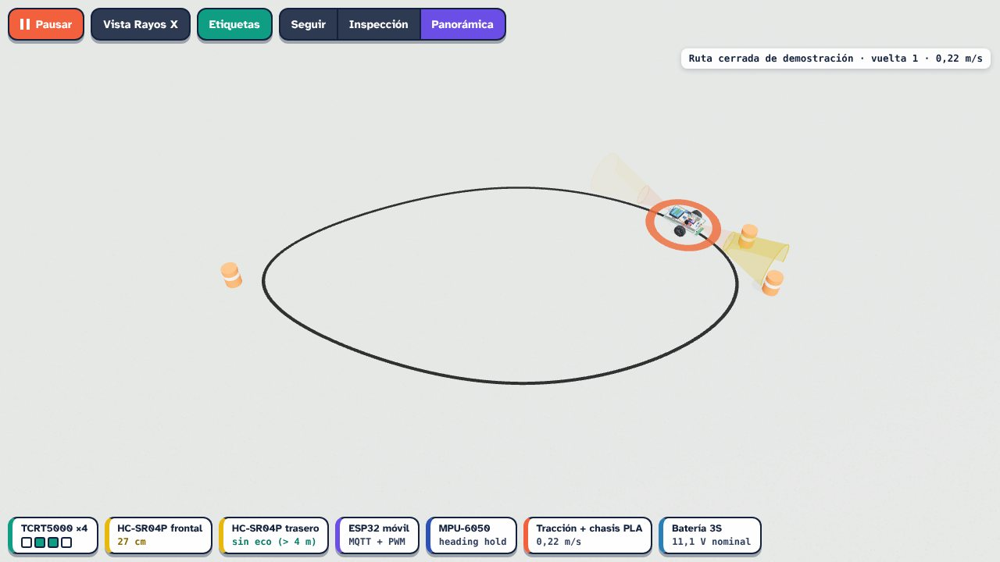
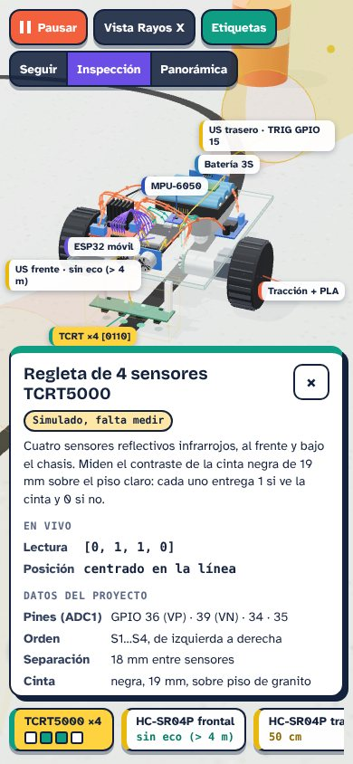

Prototipo P03 · Cinemática Diferencial · Avance 2
P03: El robot recorre solo su ruta, componente por componente
Vitrina 3D en Vivo (ruta autónoma y componentes)
Abrir en Pantalla CompletaCódigo Fuente ESP32 (.ino)
Lectura de encoders por interrupción de hardware y control PWM a 20 kHz.
Resultados de Pruebas en Laboratorio
Pendiente por llegada de componentesVoltaje Real y Caída del Driver L298N
Medición osciloscópica y con multímetro de la caída de tensión en saturación de los transistores bipolares del L298N (estimada en 2,1 V en simulación).
Esperando hardwareResolución de Encoders (Pulsos/Rev)
Verificación de los 11 pulsos base del imán × relación 1:21,3 = 234,3 pulsos por vuelta de rueda mediante interrupciones en GPIOs del ESP32.
Esperando hardwareDeslizamiento y Fricción de Ruedas
Cálculo del deslizamiento longitudinal de las ruedas de goma Ø 65 mm sobre granito pulido bajo carga real de masa con batería y chasis 3D.
Esperando hardwareCómo interactuar con la vitrina
El recorrido es automático; tú solo decides qué mirar. No hay control por teclado.
- Observa la rutaEl robot sigue una cinta negra de 19 mm en un circuito cerrado de unos 6,6 m. Pausar / Reanudar congela o retoma el recorrido; en pausa puedes seguir girando la cámara.
- Lee la regleta de líneaLos 4 TCRT5000 muestran
[0/1, 0/1, 0/1, 0/1]en vivo: 1 es «veo la cinta». Centrado marca[0,1,1,0]. - Mira los dos ultrasonidosLos conos son el haz del HC-SR04P: rojo menos de 20 cm (crítico) y ámbar de 20 a 50 cm (precaución). La etiqueta del trasero destaca su
TRIGseparado enGPIO 15. - Abre una fichaToca un componente en el 3D, en su etiqueta o en la tira inferior: pines, función, datos del proyecto y lectura en vivo.
- Vista Rayos X y EtiquetasFuncionan en marcha o en pausa: Rayos X vuelve translúcido el chasis, las ruedas y los motores; Etiquetas muestra u oculta los rótulos 3D. Las vistas Seguir, Inspección y Panorámica cambian la cámara.
Principios de Operación
Dirección y PWM a 20 kHz
Dos pines lógicos fijan la polaridad del puente H y uno modula el ciclo útil con PWM a 20 kHz, por encima del umbral audible humano.
Puente H de Potencia
Conmuta la alimentación de 12 V a los bornes del motor, permitiendo giro adelante, reversa y frenado dinámico por cortocircuito de armadura.
Reductora Planetaria
El rotor gira a ~3.600 rpm. La caja reductora 1:21,3 multiplica el par torsor y entrega ~170 rpm a las ruedas de tracción.
Encoder de Efecto Hall
Genera 11 pulsos por revolución del motor en canales desfasados 90° (cuadratura), permitiendo registrar 937 transiciones por vuelta de rueda.
Regleta de 4 TCRT5000
Cuatro sensores infrarrojos separados 18 mm, en ADC1 (GPIO 36, 39, 34 y 35), leen el contraste de la cinta negra de 19 mm. El lazo PD del firmware usa su error ponderado.
2× HC-SR04P con TRIG propio
Frente (TRIG GPIO 23, ECHO 33) y atrás (TRIG GPIO 15, ECHO 5), leídos de forma alternada. Con menos de 20 cm al frente el firmware detiene el avance; entre 20 y 50 cm solo avisa.
Parámetros del Modelo Físico
Ecuaciones cinemáticas y dinámicas de model.js (un solo modelo: kit Speed 200 con driver L298N) y geometría de los sensores de ruta.js. Los valores de la demo son supuestos de simulación.
| Parámetro | Valor de Diseño |
|---|---|
| Batería Li-Ion 3S nominal | 11,1 V (rango: 9,9 V a 12,6 V) |
| Caída interna del driver | L298N: 2,1 V (el driver seleccionado) |
| Motor DC 370 sin reductora (12 V) | 6.000 rpm nominales |
| Kit Emoshayoga JGA25-371 (Speed 200) | 280 rpm en vacío, reducción 1:21,3 |
| Factor de carga / inercia del robot | 80 % de la velocidad en vacío |
| Resolución de encoder | 11 pulsos/rev rotor × 2 canales en cuadratura |
| Diámetro de rueda / Vía entre ruedas | Ø 65 mm · Vía: 180 mm |
| Velocidad calculada a 100% PWM (L298N) | 9,0 V efectivos · 168 rpm · 0,57 m/s (656 Hz) |
| Regleta de línea | 4× TCRT5000, 18 mm entre sensores; cinta de 19 mm; huella simulada ⌀ 8 mm |
| Ultrasonido | 2× HC-SR04P, haz de ±15°; zonas: < 20 cm crítica · 20–50 cm precaución |
| Ruta de demostración | Circuito cerrado de ≈ 6,6 m; ≈ 0,40 m/s (supuesto, pendiente de medición física) |
Evidencias Visuales de la Simulación
Capturas de la vitrina autónoma. Toca una para agrandarla.





[0,1,1,0] centrada en la línea.Firmware de Tracción (ESP32)
Programa para Arduino IDE que orquesta las señales de control de motores y lee los encoders por interrupciones.
Desplegar visor de código fuente en línea
/* P03 · Tracción y Encoders · ESP32 + L298N */
#include <Arduino.h>
const uint8_t PIN_ENA = 25;
const uint8_t PIN_IN1 = 26;
const uint8_t PIN_IN2 = 27;
const uint8_t PIN_ENB = 14;
const uint8_t PIN_IN3 = 4;
const uint8_t PIN_IN4 = 13;
const uint8_t PIN_ENC_IZQ_A = 18;
const uint8_t PIN_ENC_DER_A = 19;
// ... (Código completo disponible al descargar traccion_encoders.ino)Arquitectura del Simulador
- model.js: ecuaciones de par, voltaje, velocidad y pulsos de encoder del modelo único (Speed 200 + L298N).
- ruta.js: circuito cerrado, geometría de los 4 TCRT5000 y de los 2 HC-SR04P, bidones y zonas.
- demo.js: recorrido autónomo por seguimiento de trayectoria (sin máquina de estados de teach-and-repeat).
- robot.js: modelo 3D a escala real del chasis PLA, motores, sensores, ESP32, MPU-6050 y batería 3S.
- mundo.js, fichas.js y main.js: escena, fichas de componentes e interfaz.
- vitrina.test.js: pruebas en Node del núcleo (ruta, sensores, zonas y modelo). construir.mjs genera
simulador.html.